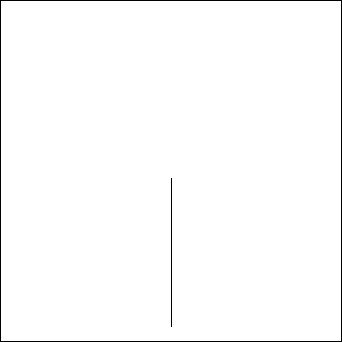

A binary fractal tree is defined recursively by symmetric binary branching.
The trunk of length 1 splits into two branches of length r, each making an angle q with the direction of the trunk.
Both of these branches divide into two branches of length r2, each making an angle q with the direction of its parent branch.
|  |
| Click the picture to repeat. |
Continuing in this way for infinitely many branchings, the tree is the set of branches, together with their limit points. These limit points are called branch tips.
| Binary trees are determined by symbol strings. |
Return to Fractal Trees.